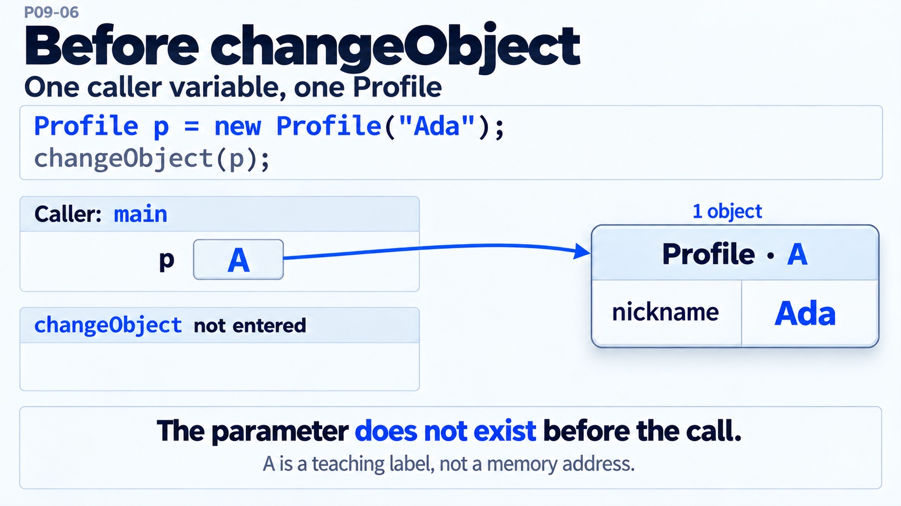

Java 문법 · P09
필드 변경과 매개변수 재할당은 왜 결과가 다를까요?
§2.9·§3 PassByValueDemo·Q2 · 원문 125~127·347~376·451~455줄
필드 변경 호출 전
new Profile("Ada")로 객체 A를 만들었습니다. 호출자 p가 A를 가리키며 아직 changeObject의 매개변수는 없습니다.

지금의 값과 연결
함께 읽을 코드
강조는 설명하는 코드 구간입니다.
주변 코드도 읽기
A/B는 객체를 구별하는 설명용 기호이며 메모리 주소가 아닙니다. 원문 실행 순서대로 Ada → Grace → 재할당을 추적합니다.
추가 Java 21 실행 자료 · 전체 소스 보기 / 직접 복사
순수 Java 예시의 전체 파일입니다. 내용을 선택해 복사할 수 있습니다. 실행 근거는 HTTP·Spring·DB·동시 요청을 포함하지 않습니다.
import java.util.Arrays;
// P09 원문의 필드·varargs 규칙을 확인하는 추가 순수 Java 실험이다.
// HTTP·Spring·DB·동시 요청 실행 결과가 아니다.
public class P09BoundariesProof {
static class RequestState {
int quantity;
static String latestName;
void record(String name, int value) { quantity = value; latestName = name; }
}
static int sum(int... values) {
int total = 0;
for (int value : values) total += value;
return total;
}
static String choose(int first, int second) { return "fixed(int,int)"; }
static String choose(int... values) { return "varargs(int[])"; }
static void out(String key, Object value) { System.out.println(key + "=" + value); }
public static void main(String[] args) {
RequestState a = new RequestState(), b = new RequestState();
out("initial", a.quantity + "/" + b.quantity + "/" + RequestState.latestName);
a.record("Ada", 2);
out("afterA", a.quantity + "/" + b.quantity + "/" + RequestState.latestName);
b.record("Grace", 5);
out("afterB", a.quantity + "/" + b.quantity + "/" + RequestState.latestName);
out("sameStatic", a.latestName.equals(b.latestName));
out("sumEmpty", sum()); out("sumItems", sum(2, 3));
out("sumArray", sum(new int[]{4, 6}));
out("chooseTwo", choose(2, 3)); out("chooseArray", choose(new int[]{2, 3}));
out("chooseEmpty", choose());
int running = 0; int[] input = {2, 3};
for (int value : input) { running += value; out("sumStep" + value, running); }
out("sumInput", Arrays.toString(input));
}
}
추가 Java 21 실행 자료 · raw 관측 13개 보기 / 직접 복사
컴파일·실행 기록에 저장된 stdout 원문입니다. 내용을 선택해 복사할 수 있습니다.
initial=0/0/null
afterA=2/0/Ada
afterB=2/5/Grace
sameStatic=true
sumEmpty=0
sumItems=5
sumArray=10
chooseTwo=fixed(int,int)
chooseArray=varargs(int[])
chooseEmpty=varargs(int[])
sumStep2=2
sumStep3=5
sumInput=[2, 3]
P09. Java 문법 기초
원문 전체 · 긴 코드·심화·자가점검·참고문헌
P09. Java 문법 기초 — 클래스·필드·메서드·생성자를 선언하고 호출하기
Practical backend · P09
이 문서에서 볼 내용
Spring·DB를 직접 구현하는 실습
클래스는 상태(필드)와 동작(메서드)을 한 이름 아래 선언하고, 객체는 그 클래스로부터 만들어진다. 필드는 객체 상태로 감싸고 메서드로 읽고 바꾸며, 호출자는 메서드의 입력과 반환값으로 객체와 협력한다. 인자는 항상 값으로 전달된다. 객체 인자는 참조값의 복사본이므로 객체 내부 변경은 보이지만 매개변수 재할당은 호출자에게 보이지 않는다.
011. 한 줄로 말하면
Java 클래스는 필드, 생성자, 메서드 같은 멤버를 선언하는 타입이고, new로 만든 객체는 각자 인스턴스 필드 값을 가진다. 메서드는 이름·매개변수·반환 타입·본문을 선언해 입력을 처리하고 결과를 돌려주며, static 멤버는 특정 객체가 아니라 클래스에 속한다. 이 문법을 읽고 고쳐야 Spring의 Controller, Service, DTO가 어떤 상태를 들고 어떤 호출을 하는지 파악할 수 있다.
022. 당장 알아야 할 것1) 소스 파일·패키지·import · 2) 클래스 구성과 생성자 · 3) 변수 종류·스코프·기본값 · 4) 메서드 선언 해부
011) 소스 파일·패키지·import
package 선언, 필요한 import, 클래스 순으로 둔다. 소스 루트 아래 경로는 패키지와 맞춘다.
package com.example.billing;
import java.math.BigDecimal;
public class Invoice { private BigDecimal total; }예: src/main/java/com/example/billing/Invoice.java. 파일 기반 javac에서는 공개 최상위 타입과 파일 basename을 맞춘다(JLS §7.6). 이름 없는 패키지는 작은 실습용이다.
022) 클래스 구성과 생성자
상수·필드, 생성자, 공개 메서드, private 보조 메서드 순은 관례다. 생성자는 클래스명과 같고 반환 타입 없이 새 객체를 초기화한다.
public class Invoice {
private final String number;
public Invoice(String number) { this.number = number; }
}직접 생성자를 선언하지 않았을 때만 기본 no-arg 생성자가 제공된다. 생성자·Builder 설계는 → P04 참조.
033) 변수 종류·스코프·기본값
인스턴스 필드는 객체별, static 필드는 클래스별 하나다. 지역 변수는 선언 블록 안에서만 유효하며 사용 전 직접 초기화한다. 기본값은 필드와 배열 원소에 적용된다.
| 종류 | 위치·범위 | 초기화 |
|---|---|---|
| 지역 변수 | 메서드·블록 안 | 읽기 전에 직접 대입 |
| 인스턴스 필드 | 객체마다 | 숫자 0, boolean false, 참조 null 등 |
static 필드 |
클래스당 공유 | 타입별 기본값 또는 초기값 |
| 매개변수 | 메서드 호출마다 | 인자값 |
private int retryCount; // 기본값 0
private static int issuedCount;
public void send() { int attempt = retryCount + 1; }요청별 상태를 공유되는 static 필드에 두지 않는다.
044) 메서드 선언 해부
public BigDecimal totalWithTax(BigDecimal rate) throws ArithmeticException {
return total.multiply(BigDecimal.ONE.add(rate));
}public은 접근, BigDecimal은 반환 타입, totalWithTax는 이름, 괄호 안은 타입·이름의 매개변수, throws는 선언 예외, 중괄호 안은 본문이다. 반환값이 없으면 void; static은 public static int parse(...)처럼 쓴다. static 문맥에는 this가 없다.
055) 호출·this·return
인스턴스 메서드는 invoice.total(), static 메서드는 Invoice.parse(...)로 호출한다. 인스턴스 안의 recalculate()는 this.recalculate()와 같다. this.number = number는 필드와 동명 매개변수를 구분한다. 비void 메서드는 정상 종료 경로마다 반환값이 필요하며, void에서는 return;으로 일찍 끝낼 수 있다.
public boolean overdue(LocalDate due) { return due.isBefore(LocalDate.now()); }
public void markPaid() { if (paid) return; paid = true; }066) 접근 제어자
접근은 멤버 사용 경계, 스코프는 이름의 유효 범위다.
| 선언 | 같은 클래스 | 같은 패키지 | 타 패키지 하위 클래스 | 그 밖 |
|---|---|---|---|---|
private |
O | X | X | X |
| 생략(package-private) | O | O | X | X |
protected |
O | O | O* | X |
public |
O | O | O | O |
* 타 패키지에서는 하위 클래스 문맥에서 상속 관계에 맞게 접근한다. 최상위 클래스는 public 또는 생략만 가능하다. 실무 기본값은 필드 private, 메서드는 필요한 호출자에게만 공개하는 것이다.
077) 캡슐화·getter/setter·final
필드를 감추고 유효성 검사를 메서드에 모은다. getter는 읽기, setter는 허용된 변경 경로다. 모든 필드에 setter를 만들 필요는 없다.
private int quantity;
public int getQuantity() { return quantity; }
public void setQuantity(int quantity) {
if (quantity < 0) throw new IllegalArgumentException();
this.quantity = quantity;
}final 변수는 재대입, final 메서드는 재정의, final 클래스는 상속을 막는다. 참조 변수의 final은 대상 객체의 가변성까지 없애지 않는다.
088) 오버로딩·가변 인자
같은 이름이라도 매개변수 목록(개수·타입·순서)이 달라야 오버로딩된다. 반환 타입만 바꾸면 오류다.
String find(long id) { ... }
String find(String code) { ... }마지막 매개변수에만 ...을 붙이는 varargs는 본문에서 배열처럼 다룬다.
static int sum(int... values) {
int total = 0;
for (int value : values) total += value;
return total;
}배열 하나 또는 개별 값을 넘길 수 있다. 오버로드에 varargs가 겹치면 선택되는 시그니처를 확인한다.
099) Java는 항상 값 전달
기본 타입은 값이 복사된다. 참조 타입도 객체가 아니라 참조값 복사본을 받는다. 따라서 같은 객체의 필드 변경은 보이지만 매개변수에 새 참조를 대입해도 호출자 변수는 그대로다. 3절 예제를 실행해 확인한다.
1010) main
public static void main(String[] args) { ... }Java 실행 시작점이다. args는 명령행 인자이며 Spring Boot도 여기서 SpringApplication.run(...)을 호출한다.
11연산자 표와 식 읽기 (보강)
연산자는 피연산자에 계산이나 비교를 적용해 값을 만든다. 아래 표는 일상적인 코드에서 자주 만나는 산술·비교·논리 연산자를 모았다. 식은 결과의 타입도 함께 생각한다. 산술식은 보통 숫자를, 비교식과 논리식은 boolean을 만든다.
| 구분 | 연산자 | 의미·예 |
|---|---|---|
| 산술 | +, -, *, /, % |
더하기, 빼기, 곱하기, 나누기, 나머지: 7 % 3은 1 |
| 부호·증감 | +x, -x, ++x, x++, --x, x-- |
부호를 붙이거나 값을 1 증감. 전위형은 증감한 값, 후위형은 증감 전 값을 식의 결과로 사용 |
| 크기 비교 | <, <=, >, >= |
숫자 등의 대소 비교: age >= 19 |
| 동등 비교 | ==, != |
기본형 값 또는 참조의 동일성 비교: count != 0 |
| 논리 | !, &&, ` |
|
| 비트/boolean | &, ` |
, ^` |
비교와 논리 연산의 결과는 true 또는 false다. Java는 숫자를 참·거짓으로 자동 변환하지 않으므로 if (count)는 컴파일되지 않고 if (count > 0)처럼 조건을 써야 한다. ==는 두 객체의 내용이 같은지 검사하지 않고 참조가 같은 객체를 가리키는지 검사한다. 문자열 내용 비교는 name.equals("Ada")처럼 equals를 사용한다. ==는 두 기본형 값이 같은지 비교할 때 알맞다.
정수 나눗셈은 소수 부분을 버린다. 따라서 7 / 3은 2이고, 나머지는 7 % 3으로 얻는다. 0으로 정수를 나누면 ArithmeticException이 난다. int 계산 결과가 표현 범위를 넘으면 예외 대신 값이 순환해 보이는 오버플로가 발생할 수 있다. 금액 계산에 double을 무심코 쓰면 이진 부동소수점의 근삿값이 드러날 수 있으므로, 실제 금액 모델에서는 보통 BigDecimal을 사용한다.
연산자 우선순위는 괄호가 없는 식을 어떤 묶음으로 해석할지 정한다. 자주 쓰는 순서는 높은 것부터 낮은 것으로 다음과 같다. 같은 묶음 안에서 결합 방향이 다를 수 있으므로, 복잡해지면 괄호를 써서 의도를 드러낸다.
| 우선순위 | 연산자 묶음 |
|---|---|
| 높음 | 후위 x++, x-- → 단항 ++x, --x, !, +, - |
곱셈·나눗셈·나머지 *, /, % → 덧셈·뺄셈 +, - |
|
관계 <, <=, >, >= → 동등 ==, != |
|
비트 AND & → XOR ^ → OR ` |
|
논리 AND && → 논리 OR ` |
|
| 낮음 | 삼항 ?: → 대입 =, += 등 |
예를 들어 2 + 3 * 4는 곱셈을 먼저 해 14가 된다. 10 + 6 / 2 * 3은 곱셈·나눗셈이 덧셈보다 먼저이고, 같은 우선순위의 이항 산술 연산이 왼쪽부터 결합하므로 10 + ((6 / 2) * 3), 즉 19다. a || b && c는 a || (b && c)로 묶인다.
반면 수학 기호처럼 0 < age < 100이라고 연쇄 비교할 수 없다. 첫 비교의 결과가 boolean이기 때문에 age > 0 && age < 100으로 써야 한다. 우선순위에 익숙해져도 조건이 길면 괄호나 중간 boolean 변수를 써서 읽는 사람이 계산을 머릿속으로 추적하지 않게 한다.
&&와 ||는 단락 평가(short-circuit)를 한다. &&의 왼쪽이 false면 전체 결과가 이미 false라 오른쪽을 실행하지 않는다. ||의 왼쪽이 true면 전체 결과가 이미 true라 오른쪽을 건너뛴다.
그래서 denominator != 0 && total / denominator > 3은 분모가 0일 때 나눗셈을 피한다. user != null && user.isActive()도 null 객체의 메서드 호출을 막는 전형적인 가드다. 다만 오른쪽 식을 건너뛸 수 있으므로, 그 안에 필수 대입이나 부수 효과를 넣으면 조건에 따라 동작이 달라진다.
&와 |는 boolean 두 값을 받을 수 있지만 양쪽을 모두 평가한다. 정수에 쓰면 비트 연산이 되므로 논리 조건에는 보통 &&, ||를 쓴다.
다음 순수 Java 예제는 산술·비교·논리식과 우선순위, 단락 평가를 한 번에 보여 준다.
public class OperatorsDemo {
public static void main(String[] args) {
int quantity = 3;
int unitPrice = 1200;
int subtotal = quantity * unitPrice;
int discounted = subtotal - subtotal / 10;
int precedence = 2 + 3 * 4;
int leftToRight = 10 + 6 / 2 * 3;
boolean eligible = quantity >= 3 && discounted >= 3000;
int divisor = 0;
boolean safe = divisor != 0 && 24 / divisor > 3;
int calls = 0;
boolean skippedAnd = false && (++calls > 0);
boolean skippedOr = true || (++calls > 0);
boolean evaluatedBitwise = false & (++calls > 0);
System.out.println("subtotal=" + subtotal + ", discounted=" + discounted);
System.out.println("precedence=" + precedence + ", leftToRight=" + leftToRight);
System.out.println("eligible=" + eligible + ", safe=" + safe);
System.out.println("shortCircuit=" + skippedAnd + ", " + skippedOr
+ ", bitwise=" + evaluatedBitwise + ", calls=" + calls);
}
}JDK 21 실행 결과:
subtotal=3600, discounted=3240
precedence=14, leftToRight=19
eligible=true, safe=false
shortCircuit=false, true, bitwise=false, calls=1마지막 줄에서 &&와 ||의 오른쪽에 둔 ++calls는 실행되지 않았지만, boolean & 오른쪽은 실행되어 calls가 1이 됐다. 이처럼 증감 연산자를 조건식 안에 넣으면 값 계산과 상태 변경이 뒤섞여 읽기 어렵다. 가능하면 증감은 별도 줄로 옮기고, x++와 ++x가 식 안에서 다른 결과를 만든다는 점도 기억한다. 배열 인덱스나 반환식에 후위형을 쓸 때는 특히 전후 어느 값이 사용되는지 확인한다.
참고: Operators (The Java™ Tutorials) — https://docs.oracle.com/javase/tutorial/java/nutsandbolts/operators.html 참고: Chapter 15. Expressions, §15.23 Conditional-And Operator — https://docs.oracle.com/javase/specs/jls/se25/html/jls-15.html#jls-15.23
033. 따라 하기단계 1 — 프로젝트 뼈대 만들기 · 단계 2 — main에서 Spring Boot 시작 · 단계 3 — Controller의 메서드와 모델 필드 연결 · 단계 4 — HTTP 요청으로 메서드 확인
Spring Boot 4.1.1·Java 25 기준 실습이다. Spring 코드는 미실행이며, 순수 Java 예제는 JDK 21에서 실행했다.
01단계 1 — 프로젝트 뼈대 만들기
syntax-demo/
├── settings.gradle.kts
├── build.gradle.kts
└── src/main/java/com/example/syntax/
├── GreetingApplication.java
├── GreetingController.java
└── Greeting.javaGradle Kotlin DSL 파일은 다음과 같다.
// settings.gradle.kts
rootProject.name = "syntax-demo"// build.gradle.kts
plugins {
java
id("org.springframework.boot") version "4.1.1"
}
group = "com.example"
version = "0.0.1-SNAPSHOT"
java {
toolchain {
languageVersion = JavaLanguageVersion.of(25)
}
}
repositories { mavenCentral() }
dependencies {
implementation(platform("org.springframework.boot:spring-boot-dependencies:4.1.1"))
implementation("org.springframework.boot:spring-boot-starter-web")
}mkdir -p syntax-demo && cd syntax-demo 후 파일을 저장한다. Wrapper가 없으면 설치된 Gradle로 gradle wrapper를 실행한다. 확인: ./gradlew --version, java -version.
Maven은 pom.xml에 parent org.springframework.boot:spring-boot-starter-parent:4.1.1, Java 25, spring-boot-starter-web, spring-boot-maven-plugin을 선언한다. 소스는 같고 mvn spring-boot:run으로 실행한다.
02단계 2 — main에서 Spring Boot 시작
파일 src/main/java/com/example/syntax/GreetingApplication.java:
package com.example.syntax;
import org.springframework.boot.SpringApplication;
import org.springframework.boot.autoconfigure.SpringBootApplication;
@SpringBootApplication
public class GreetingApplication {
public static void main(String[] args) {
SpringApplication.run(GreetingApplication.class, args);
}
}main은 객체 생성 전 호출되는 static 메서드다. 확인: ./gradlew bootRun 후 시작 로그를 본다. Maven은 mvn spring-boot:run이다.
03단계 3 — Controller의 메서드와 모델 필드 연결
파일 GreetingController.java:
package com.example.syntax;
import org.springframework.web.bind.annotation.GetMapping;
import org.springframework.web.bind.annotation.PathVariable;
import org.springframework.web.bind.annotation.RestController;
@RestController
public class GreetingController {
@GetMapping("/greetings/{name}")
public Greeting greet(@PathVariable("name") String name) {
String normalizedName = name.trim();
return new Greeting("Hello, " + normalizedName);
}
}greet는 문자열을 받아 Greeting을 반환하고, normalizedName은 지역 변수다. new Greeting(...)이 생성자를 부른다.
파일 Greeting.java:
package com.example.syntax;
public class Greeting {
private final String message;
public Greeting(String message) {
this.message = message;
}
public String getMessage() {
return message;
}
}private final 필드를 생성자로 정하고 getter로 노출한다. 확인: 패키지와 파일 경로를 맞춘 뒤 ./gradlew compileJava(Maven은 mvn compile).
04단계 4 — HTTP 요청으로 메서드 확인
05순수 Java 실행 검증 — 참조값도 값으로 전달
저장한 파일 _scratch/P09/PassByValueDemo.java를 지정된 JDK 21로 실행했다.
public class PassByValueDemo {
private static class Profile { private String nickname; Profile(String n) { nickname = n; } }
private static void changeObject(Profile p) { p.nickname = "Grace"; }
private static void replaceLocalReference(Profile p) { p = new Profile("Local only"); }
private static void changePrimitive(int n) { n = 99; }
public static void main(String[] args) {
Profile p = new Profile("Ada"); changeObject(p);
System.out.println("after field mutation=" + p.nickname);
replaceLocalReference(p);
System.out.println("after parameter reassignment=" + p.nickname);
int n = 1; changePrimitive(n);
System.out.println("after primitive parameter assignment=" + n);
}
}실행 명령: java _scratch/P09/PassByValueDemo.java
after field mutation=Grace
after parameter reassignment=Grace
after primitive parameter assignment=1복사된 참조로 같은 객체의 필드를 바꾸면 보인다. 매개변수 재할당은 복사본만 바꾸며 기본 타입도 값 복사라 호출자 값은 유지된다.
06순수 Java 실행 검증 — 오버로딩·varargs·static 호출
_scratch/P09/MethodsDemo.java를 같은 JDK로 실행했다.
public class MethodsDemo {
private final String prefix;
private static int created;
public MethodsDemo(String prefix) { this.prefix = prefix; created++; }
public String format(String name) { return prefix + name; }
public String format(String name, int count) { return format(name).repeat(count); }
public void printAll(String... messages) {
for (String message : messages) System.out.println(message);
}
public static int createdCount() { return created; }
public static void main(String[] args) {
MethodsDemo demo = new MethodsDemo("Hello, ");
System.out.println(demo.format("Ada"));
System.out.println(demo.format("Hi! ", 2));
demo.printAll("one", "two");
System.out.println("created=" + MethodsDemo.createdCount());
}
}Hello, Ada
Hello, Hi! Hello, Hi!
one
two
created=1첫 두 메서드는 인자 목록이 달라 오버로드다. printAll은 0개 이상 문자열을 받을 수 있고 본문에서는 배열처럼 반복한다. createdCount()는 타입으로 부르는 static 메서드다. JDK 21 실행 출력이며 이 예제 문법은 Java 25에서도 같다.
044. 치트시트
| 이름 | 용도 | 예시 | 주의 |
|---|---|---|---|
package / import |
타입 위치·이름 | package com.app; |
파일 경로와 패키지를 맞춤 |
| 클래스 | 필드·메서드 묶음 | public class Order {} |
공개 타입 파일명 일치 |
| 필드 / 지역 변수 | 상태 / 임시값 | private long id; |
지역 변수는 직접 초기화 |
static |
클래스 소속 멤버 | Order.nextId() |
인스턴스 this 없음 |
| 생성자 | 객체 초기화 | new Order(7L) |
반환 타입 없음 |
반환 메서드 / void |
결과 / 작업 | int size() / void cancel() |
반환 메서드는 return 필요 |
| 접근 제어 | 사용 경계 | private, 생략, protected, public |
필드는 보통 private |
| 오버로딩 | 입력별 같은 이름 | find(long), find(String) |
반환 타입만 다르면 오류 |
| varargs | 여러 입력 수용 | log(String... values) |
마지막 매개변수만 가능 |
this / final |
현재 객체 / 재대입 방지 | this.code = code; |
참조 final은 객체 불변과 다름 |
main |
실행 시작점 | public static void main(String[] args) |
런처가 args 전달 |
055. 자주 나는 에러와 해결
class Invoice is public, should be declared in a file named Invoice.java→ 공개 클래스 이름과 파일명이 다르다 → 파일을Invoice.java로 바꾸고 패키지 디렉터리도package와 맞춘다.cannot find symbol→ 이름 오타, import 누락, package 경로 불일치, 메서드 인자 타입 불일치 중 하나다 → 컴파일 오류가 가리킨 줄에서 선언 이름·import·매개변수 시그니처를 차례로 확인한다.non-static variable ... cannot be referenced from a static context→main이나 static 메서드에서 인스턴스 필드/메서드를 객체 없이 사용했다 → 객체가 필요한 동작이면obj.method()로 호출하고, 실제로 인스턴스 상태가 필요 없는 기능만 static으로 만든다.missing return statement또는incompatible types→ 비void 메서드의 일부 경로가 반환하지 않거나 반환값의 타입이 선언과 다르다 → 모든 분기에서 선언 타입에 맞는 값을 반환한다. 반환할 의미가 없는 작업이면void인지 다시 판단한다.variable x might not have been initialized→ 지역 변수를 기본값이 있을 것으로 착각했다 → 선언할 때 초기화하거나, 읽기 전 모든 분기에서 대입한다. 필드의 초기화 규칙을 지역 변수에 적용할 수 없다.- 필드 변경이 호출 뒤 사라짐 → 매개변수 변수 자체에 새 값을 대입해 호출자의 변수가 바뀔 거라 기대했다 → 공유할 객체를 전달했다면 그 객체를 수정하고, 호출자가 새 객체를 받게 하려면 결과를 반환해
x = method(x)처럼 대입한다.
066. 한 단계 더
선언을 읽을 때는 먼저 패키지와 타입 이름, 다음에 필드의 소유자(객체 또는 클래스), 메서드의 접근 범위·매개변수·반환 타입을 본다. 호출 시 컴파일러는 이름과 인자 목록으로 접근 가능한 메서드를 선택하고, 인자 값을 매개변수 변수에 전달한다. 인스턴스 메서드는 대상 객체의 this를 기준으로 필드에 접근하지만 static 메서드는 객체 상태에 기대지 않는다.
필드 접근 제한은 변경 규칙을 한곳에 모아 실수 가능한 경로를 줄인다. 객체의 동등성 계약과 상속 설계는 → J02 참조. 레코드와 모던 문법은 → J05, 제네릭은 → J03 참조.
077. 자가점검 Q&A (면접 대비)Q1. 필드와 지역 변수의 초기화 규칙은 왜 다른가? · Q2. 객체를 메서드에 넘겼는데 필드 변경은 보이고 재할당은 안 보이는 이유는? · Q3. 반환 타입만 바꿔 오버로딩할 수 없는 이유는? · Q4. static 메서드에서 this를 쓸 수 없는 이유는?
01Q1. 필드와 지역 변수의 초기화 규칙은 왜 다른가?
필드는 객체 또는 클래스가 만들어질 때 타입별 기본값으로 초기화된다. 지역 변수는 실행 흐름마다 초기화 여부가 달라질 수 있어, 컴파일러가 읽기 전에 대입했는지 확인한다. 지역 변수의 자동 기본값을 가정하면 특정 분기에서 의미 없는 값이 사용될 수 있다.
꼬리질문: 참조 필드의 기본값은? null이다. 업무상 필수 참조 필드는 생성자에서 유효한 값으로 설정해 null 상태를 줄인다.
02Q2. 객체를 메서드에 넘겼는데 필드 변경은 보이고 재할당은 안 보이는 이유는?
Java는 참조에 의한 전달이 아니라 값 전달이다. 객체를 가리키는 참조값이 복사되므로 매개변수와 호출자의 변수가 같은 객체를 가리킬 수 있다. 그 객체의 필드를 바꾸는 것은 관찰되지만 매개변수 변수에 다른 참조를 대입해도 호출자 변수는 바뀌지 않는다.
꼬리질문: 호출자에게 새 객체를 돌려주려면? 메서드의 결과를 반환하고 호출자가 대입한다. 예: profile = normalize(profile);.
03Q3. 반환 타입만 바꿔 오버로딩할 수 없는 이유는?
메서드를 호출할 때 컴파일러는 이름과 인자 목록을 보고 후보를 고른다. 반환 타입만 다르면 같은 호출식이 어느 메서드를 뜻하는지 정할 수 없다. 의미가 다른 작업이면 이름을 나누고, 입력 형식만 달라 같은 작업이면 매개변수를 오버로드한다.
꼬리질문: 매개변수 이름만 바꾸면? 시그니처가 같으므로 중복 선언 오류다. 매개변수 이름은 호출 선택 기준이 아니다.
04Q4. static 메서드에서 this를 쓸 수 없는 이유는?
static 메서드는 클래스에 속하며 특정 인스턴스를 대상으로 하지 않고 호출된다. 어느 객체의 인스턴스 필드를 가리켜야 할지 정해진 this가 없다. 필요한 객체 상태를 인자로 받거나 인스턴스 메서드로 만들어 대상 객체에서 호출한다.
꼬리질문: static 메서드에서 인스턴스 메서드를 호출하려면? 해당 클래스 객체를 받아 obj.instanceMethod()처럼 호출한다.
05Q5. private 필드에 getter와 setter를 모두 만들면 캡슐화가 되는가?
접근 문법만 감췄다고 캡슐화가 끝나지 않는다. setter가 검증 없이 어떤 값이든 허용하면 필드 공개와 실질적으로 다르지 않다. 도메인 규칙에 맞춰 허용된 동작만 노출하고 변경할 필요가 없는 값에는 setter를 제공하지 않는다.
꼬리질문: 조회 전용 필드는 어떻게 두나? 필드를 private으로 두고 getter만 제공하거나 필요한 조회 메서드만 노출한다.
06Q7. varargs를 선언하면 메서드 본문에서 여러 인자는 어떻게 보이는가?
마지막 매개변수에만 Type... values로 선언한다. 호출자는 값을 0개 이상 전달하거나 해당 타입 배열 하나를 전달할 수 있고, 메서드 안에서는 배열처럼 인덱싱·반복한다. varargs와 다른 오버로드가 겹치면 실제 선택된 메서드 시그니처를 확인한다.
꼬리질문: varargs 매개변수를 두 개 선언할 수 있나? 불가능하다. 가변 길이 입력은 마지막 매개변수 하나에만 둘 수 있다.
088. 참고문헌
- Controlling Access to Members of a Class — https://docs.oracle.com/javase/tutorial/java/javaOO/accesscontrol.html — 멤버 접근 범위를 확인했다.
- Passing Information to a Method or a Constructor — https://docs.oracle.com/javase/tutorial/java/javaOO/arguments.html — 인자·매개변수와 가변 인자를 확인했다.
- Calling Methods and Constructors — https://dev.java/learn/language/oop/classes-objects/calling-methods-constructors/ — 최신 Java 학습 자료로 호출·varargs를 교차 확인했다.
- Java Language Specification, Chapter 7: Packages and Modules — https://docs.oracle.com/javase/specs/jls/se25/html/jls-7.html — 패키지와 파일 기반 컴파일 규칙을 확인했다.
- Java Language Specification, Chapter 8: Classes — https://docs.oracle.com/javase/specs/jls/se25/html/jls-8.html — 필드·메서드·매개변수 선언을 확인했다.
- Java Language Specification, Chapter 15: Expressions — https://docs.oracle.com/javase/specs/jls/se25/html/jls-15.html — 호출 인자가 새 매개변수 변수에 대입되는 규칙을 확인했다.
- Developing Your First Spring Boot Application — https://docs.spring.io/spring-boot/tutorial/first-application/index.html — Boot 웹 앱 실습과 Maven/Gradle 구성을 확인했다.